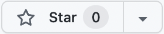

Apollo
Basics and Conventions
Query Operations
Variables
Query Operations
State Helpers
Basic Mutation Operation
Anatomy of a GraphQL document
Defines one or more operations and
fragments.
Anatomy of a GraphQL document
Defines one or more operations and
fragments.
Interfaces and Unions
Fragments
Share fields between operations
Given the two queries below, what will be
stored in the cache?
Given the two queries below, what will be
stored in the cache?
Will the second query's result be read from
the cache or requested over the network?
What will be stored in the cache after the
user clicks the button?

What will be stored in the cache after the
user clicks the button?
Field Policies
Transform response fields
Field Policies
Calculate client-side data
Field Policies
Update cache data
Pagination
fetchMore
Pagination
relayStylePagination
Field Policies
Customize caching behavior
Field Policies
References
Field Policies
Cache Redirects